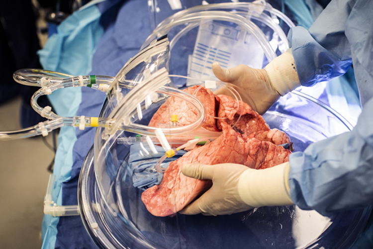

| Características | |
| En la mayoría de los casos, el nuevo pulmón o los nuevos pulmones los dona una persona menor de 65 años con muerte cerebral, pero que aún permanece con soporte vital. Los pulmones del donante deben estar libres de enfermedades y ser lo más compatibles posible con su tipo de tejido. Esto reduce la probabilidad de que el cuerpo vaya a rechazar el pulmón trasplantado. |  |